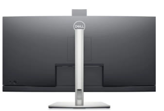

34 polegadas curvas. Com câmara e colunas.
O monitor do nosso Pack Dell, agora também à venda sozinho. Um ecrã ultra largo e curvo da gama profissional Dell, com câmara pop-up, microfones e colunas para videochamadas, e um só cabo USB-C para ligar e carregar o portátil. Testado e com garantia.
Pague online por MB WAY, Multibanco ou cartão, antes do levantamento ou do envio. Envio grátis para Portugal continental até 31 de dezembro, ou levante na loja do Porto.
O pagamento online está temporariamente indisponível. Fale connosco no WhatsApp 963 401 241 para reservar.

Mais espaço no ecrã, menos cabos na secretária.
Dois ecrãs num só
3440×1440 em 34″ curvos: duas janelas lado a lado, folhas de cálculo inteiras e linhas de tempo compridas sem mudar de ecrã.
Pronto para reuniões
Câmara pop-up de 5MP com Windows Hello, microfones, colunas de 5W e botão do Microsoft Teams.
Um só cabo
Ligue o portátil por USB-C: imagem, rede, USB e carregamento até 90W no mesmo cabo.
O monitor que substitui dois.

Também precisa de computador? Veja o Pack Dell com este monitor e mini PC OptiPlex.
Ficha técnica
| Modelo | Dell C3422WE |
|---|---|
| Ecrã | 34″ (34,14″) curvo 3800R, 21:9 |
| Resolução | UWQHD 3440×1440 a 60Hz |
| Painel | IPS antirreflexo · 300 cd/m² · 5 ms · 99% sRGB |
| Câmara | Pop-up 5MP com IV (Windows Hello) |
| Áudio | 2× 5W · microfones · botão Teams |
| Ligações | HDMI 1.4 · DP 1.2 · USB-C 90W · RJ-45 · hub USB |
| Pé | Regulável em altura, inclinação e rotação |
| Inclui | Monitor, pé e cabo de alimentação |
| Condição | Seminovo Grade A |
| Garantia | 18 meses |
| Preço | 429€ IVA incluído |
Um monitor Dell curvo de 34″, testado e com garantia, por 429€.
Pague online por MB WAY, Multibanco ou cartão e depois levante na loja (Rua da Alegria 1035, Porto) ou receba em casa. Dúvidas? WhatsApp 963 401 241 **.